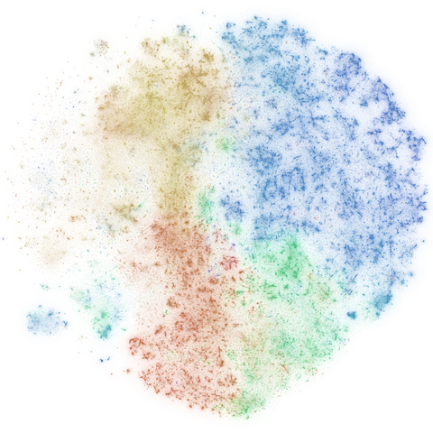
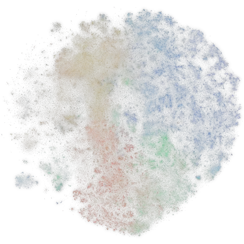

Science, made readable.
Find any study, across all of science. Read it in plain words.
Find any study, across all of science. Read it in plain words.


Mock: searching by meaning covers 2024 onward until the full index is built (about a day after the embeddings finish); exact-word searches cover everything. Papers marked "Readable" can be rewritten today.
A map of 128 million studies, 1800 to today. Studies about similar things sit close together; colours are fields. Scroll to zoom, drag to move.